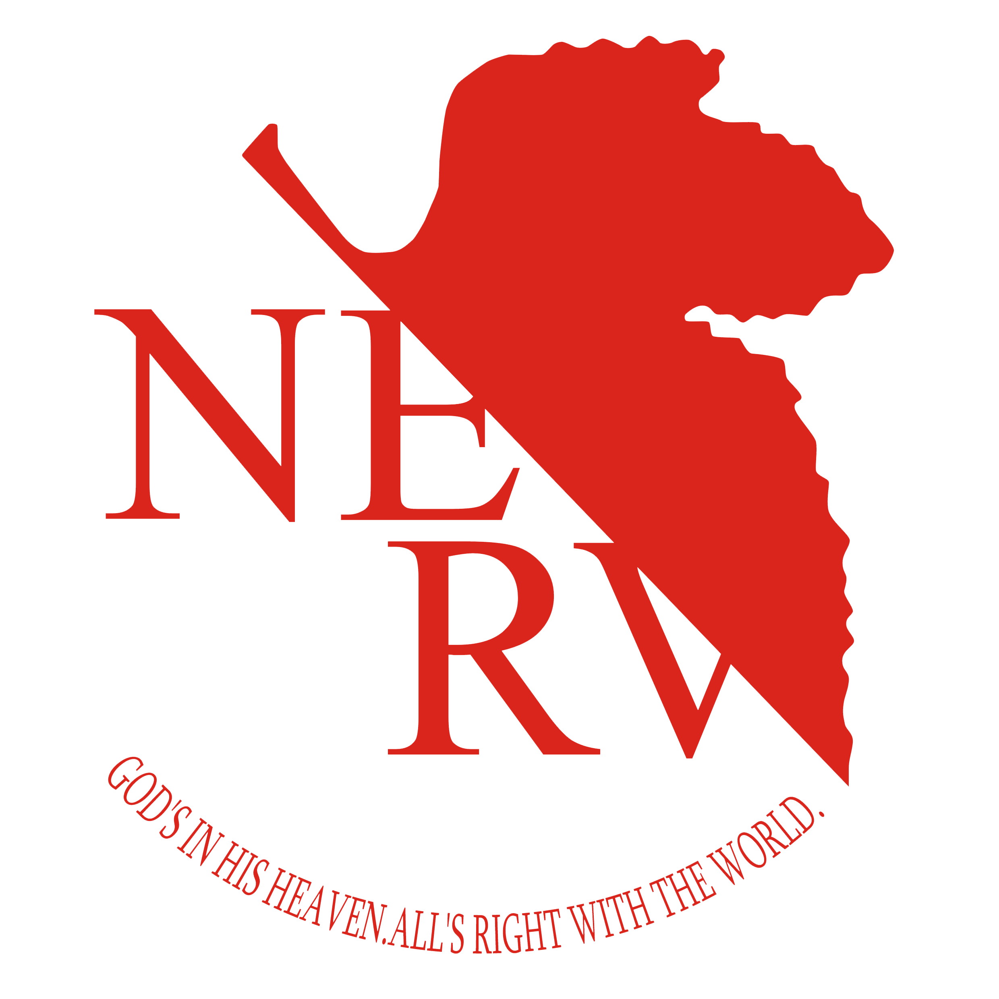
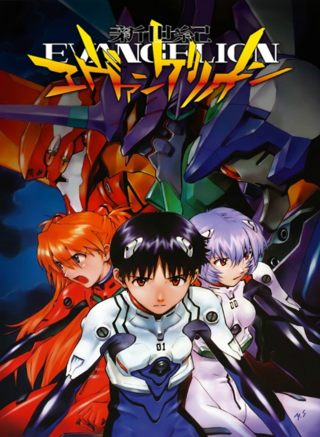

日本1995年庵野秀明执导的电视动画作品
《新世纪福音战士》是由GAINAX、龙之子工作室共同制作的日本动画作品，简称EVA。于1995年10月4日-1996年3月27日在日本东京电视台首播，全26集。由庵野秀明担任主要编剧及总导演，贞本义行担任角色设计，绪方惠美、林原惠美、宫村优子、三石琴乃等人担任主要配音。
作品以发生了“第二次冲击”大灾害的2015年的世界为舞台，主要讲述了14岁少年少女们操控巨大泛用人形决战兵器“EVA”，与袭击第3新东京市的神秘敌人“使徒”之间的战斗故事。
该片播放期间收视率低迷，但是剧终后在社会上引起了毁誉参半的强烈反响。它与1970年代的《宇宙战舰大和号》及1980年代的《机动战士高达》并肩，成为了对后世动画作品产生影响的第三代动画作品，引发了动画热潮。1997年，公映了与电视动画系列结局（第25集和最终集）有所不同的剧场版动画《新世纪福音战士 Air/真心为你》。
©22206班钱涛期末作业